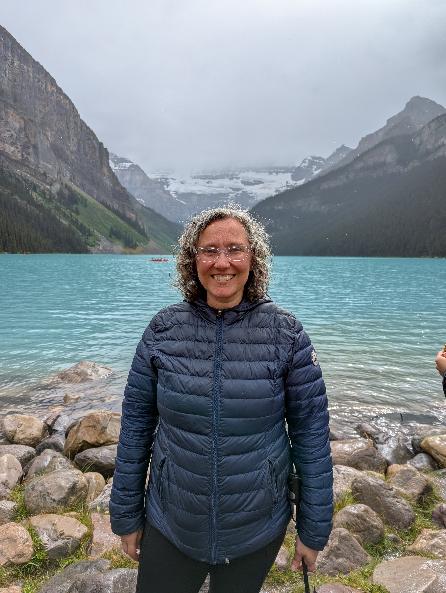

Sobre mí
Psicóloga colegiada en el Col·legi Oficial de Psicologia de Catalunya (COPC) n. 36181.

Desde siempre me ha gustado estar al lado de las personas de mi entorno, escucharlas y ofrecerles apoyo en los momentos en los que más lo necesitan.
Esto hizo que, aunque inicialmente estudié ingeniería informática, siempre mantuviera presente el interés por estudiar psicología. Por este motivo, después de tener a mi hijo y a mi hija, decidí emprender este nuevo reto.
Creo profundamente en la importancia de contar con un espacio donde poder hablar con calma, sentirse escuchada y comprender mejor lo que estamos viviendo.
Mi manera de trabajar
Me gusta acompañar a las personas en sus procesos personales desde una escucha atenta y respetuosa, ayudándolas a comprender mejor lo que sienten, lo que les ocurre y el sentido del momento que están atravesando.
Entiendo la terapia como un espacio donde poder detenerse, mirar hacia dentro y dar lugar a aquello que a menudo queda tapado por las prisas, las exigencias o el malestar.
Trabajo desde la cercanía, la sensibilidad y el respeto por el ritmo de cada persona, adaptando el proceso terapéutico a sus necesidades.